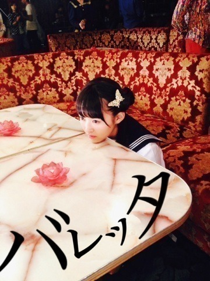
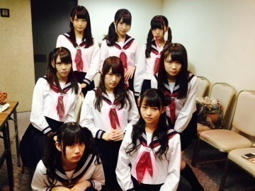

| 2013/11 01 Fri | 心臓みたいな果実。 512回目 |

『バレッタ』MVが
YouTubeで公開されました！
MVは内容は恐ろしい話だけど、
作品としてすごい好きな世界観。
ナイフを思い出しました。
冒頭、誘拐されて
剥製になってしまう女子高生を
演じました。
こうやってチャンスを
いただいて嬉しかったですが
表題曲のMVであることに
プレッシャーを感じました。
可哀想って思ってもらえたら、
それがいちばんです。

バック8の剥製、マネキン？
になった時の表情見てほしい！
銃撃戦があったりと衝撃的だったけど
また乃木坂46の
新しい一面が見れたのではないかな。
というか、新しい一面を
どんどん見せていきたい！
ということで
カップリングMVもお楽しみに♪

ダンスシーン、
みんな蝶のバレッタ付けてるけど
全部違うんだよー
明日は早稲田祭！
早稲田を乃木坂46がジャックするぞ

トークショーとか緊張するなー
どうしようーーー
そして、明後日はNHKロックの学園。
イベントいっぱいで嬉しいなっ
一緒に盛り上がりましょう！
まりか
コメント(380)
2013/11/01 23:42